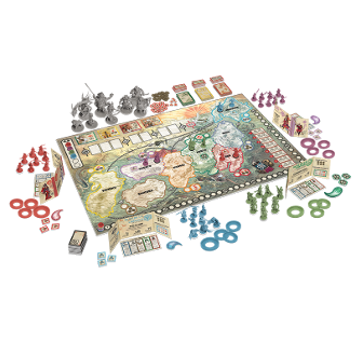
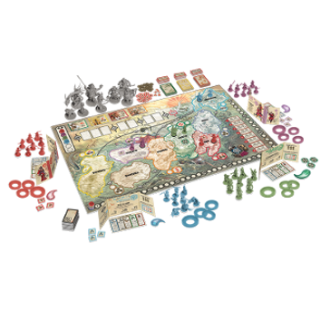

Quienes somos
Somos un grupo de amigos, amantes de los juegos de mesa
“ Cuando divertirse es (casi) lo único que importa”
En pleno siglo XXI, gracias a internet, lo conocemos prácticamente todo y cada vez hay menos cosas no virtuales que nos diviertan. Invertimos mucho tiempo en redes sociales viirtuales, en hablar con nuestros amigos o familiares o en entretenernos de cualquier manera en el mundo online. Mientras vamos abandonando las redes sociales reales, el cara a cara, compartir momentos y vivencias con las personas de tu entorno.
Donde antes había un tablero y unos dados, ahora hay un móvil.
Bajo este panorama nace nuestra tienda de juegos de mesa online. Una modesta página creada por jugadores natos para jugadores natos, principiantes, expertos, familias, amigos y cualquiera que sepa apreciar la magia de la diversión sobre un tablero.
Cuando compras un juego no solo te llevas una caja con un tablero, cartas, dados, fichas o figuras. No, te llevas eso más cientos de horas compartiendo momentos grandes con tus rivales, compitiendo por ver quién se lleva la victoria final o cooperando para lograr objetivos.
En A quién le toca, ponemos a tú disposición este gran tesoro, elige entre nuestra gama de productos y disfruta de ese tiempo bien aprovechado con los tuyos